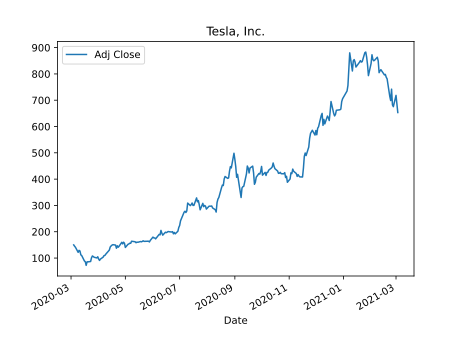
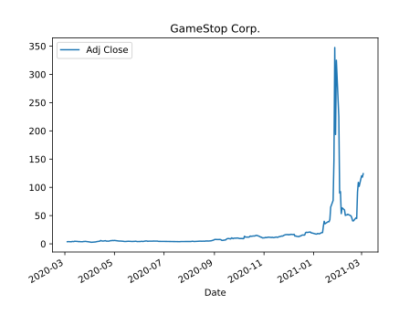
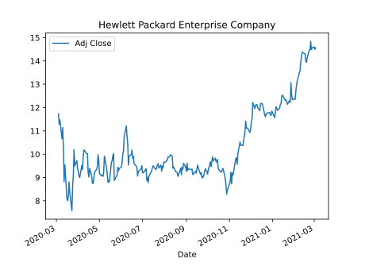
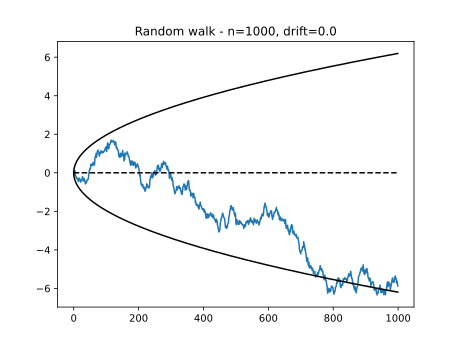
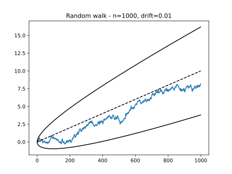

Stock Prices - How do they move?
Christian Duffau-Rasmussen
05-03-2021
Stock prices

Stock prices

Stock prices

Stock prices

The Efficient Market Hypothesis
A market in which prices always “fully reflect” available information is called “efficient”.
The Efficient Market Hypothesis
\[E\left[P_{t+1}|\Phi_t\right] = P_t + E\left[r_{t+1}|\Phi_t\right]P_t \]
- \(P_t\): Price at time \(t\)
- \(r_t\): Return from \(t-1\) to \(t\)
- \(\Phi_t\): The available information at time \(t\)
The Random Walk Hypothesis
\[P_{t} = M + P_{t-1} + r_t \]
- \(r_t\) : Is “white noise” (i.i.d., mean zero)
- \(M\): Is the risk free return
The Random Walk Hypothesis
<Live simulation>
The Random Walk Hypothesis

The Random Walk Hypothesis

Pick The Walk!
Formal test
Dickey-Fuller test
\[ P_{t} = M + a P_{t-1} + r_t \]
Test if \(a = 1\)
Survey of securities
10 random securities from:
- Index (e.g. S&P 500)
- ETF’s
- Mutual funds (“investeringsforening”)
- Stocks
- Currencies
Returns
Day-to-day returns are defined as, \[r_t = \frac{P_t - P_{t-1}}{P_{t-1}}\]
Autocorrelation
Autocorrelation
“Large changes tend to be followed by large changes, of either sign, and small changes tend to be followed by small changes.”
Benoit Mandelbrot (1963)
Autocorrelation
\[\text{acf}_k(P_t) = \text{corr}(P_t, P_{t-k})\]